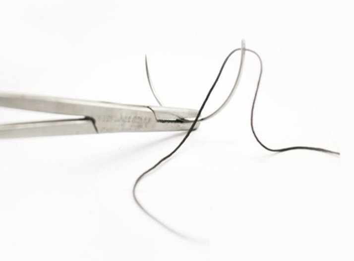

Suture designed to dissolve and be absorbed by the body over time.
An abnormal bulge in the wall of a blood vessel.
Administration of medications to induce loss of sensation or consciousness.
Surgical connection between two structures or organs.
Coating that reduces or prevents microbial growth on sutures.
Valve in the heart that controls blood flow from the left ventricle to the aorta.
Surgical replacement of an artery using a graft.
A congenital heart defect involving a hole in the heart’s atrial septum.
Surgical technique for repairing thoracic vena cava defects involving both venae cavae.
A two-leaflet valve, also known as the mitral valve.
Surgical technique involving the separation of tissues without cutting.
Suture made from multiple interwoven threads for strength and flexibility.
Surgical procedure creating an alternative route for blood flow.
Induced temporary cessation of heart activity during surgery.
Machine-assisted circulation and oxygenation of blood during heart surgery.
Major artery supplying blood to the brain, neck, and face.
The removal of dead and seal tissues from a wound to promote healing.
Surgical procedure to replace damaged corneal tissue with healthy donor tissue.
Surgery to bypass blocked coronary arteries using grafts.
Destruction of tissue using extreme cold.
Surgical repair or reconstruction of the skin.
Use of high-frequency electric currents to treat tissues.